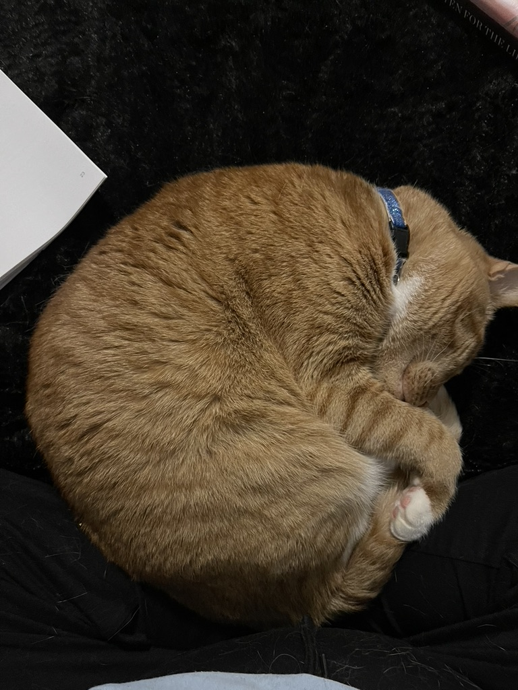
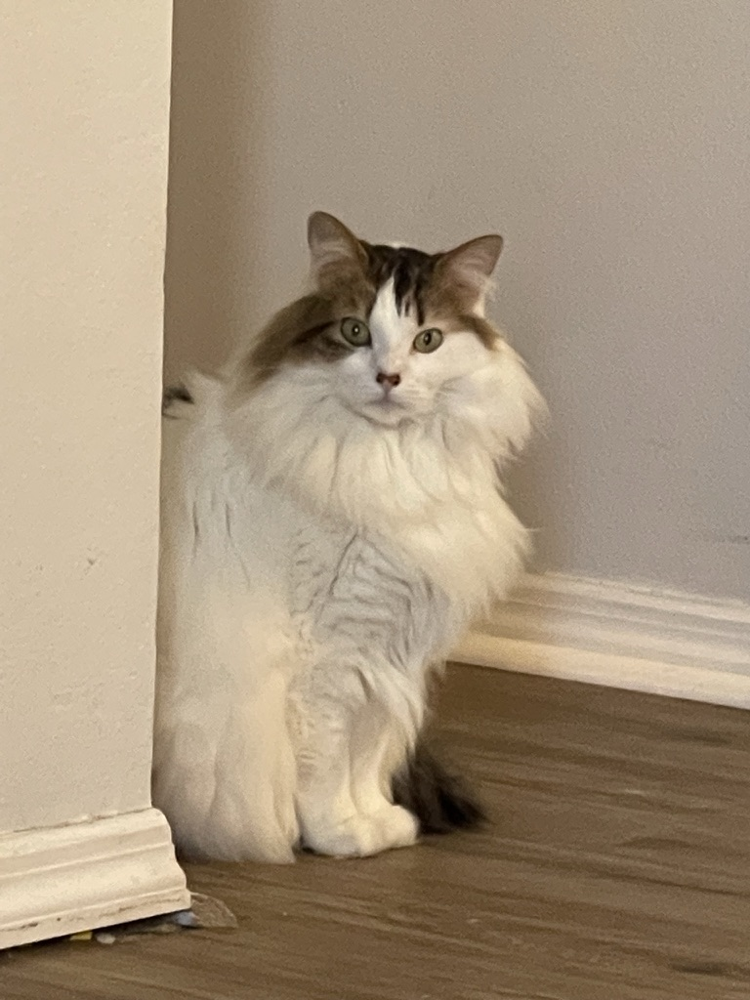
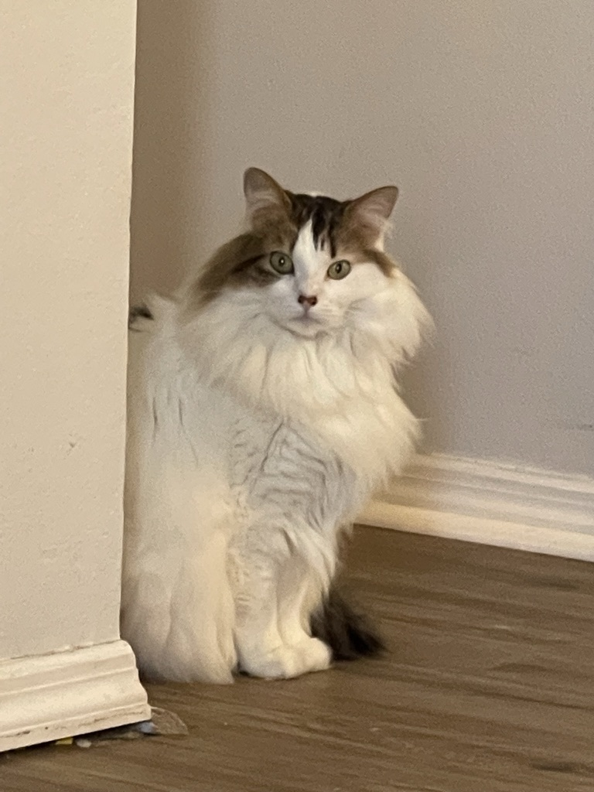
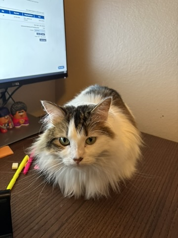
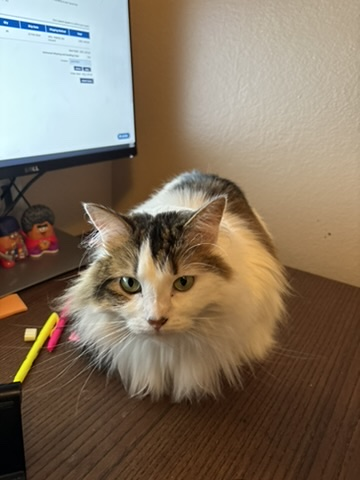
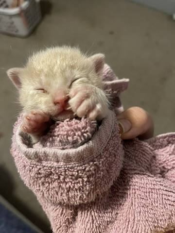
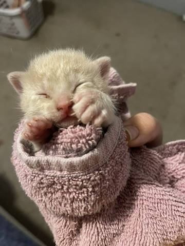
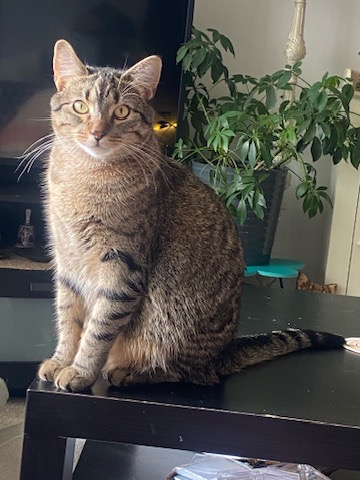

Goose
Here my cat Goose. He is orange and crazy. I got him in 2020, a friend
of mine found a cat in his garage and his whole family is allergic to
cats so he called me. Like most orange cats he often doesn't have the one shared brain cell amongst all orange cats.
He tries to escape the house any time he gets a chance but never goes far.
He often acts more like a dog than a cat because he loves getting into food and trash and eating off your plate. He is really friendly to humans but also feels threatened by baby cats. The rest is history.



Lola
Here is my cat Lola. She is a big fan of social distancing.
She likes to stare from a distance and make you feel uneasy.
She also like to jump on my desk and attack my hand when i use the mouse.
She is a fan of me but if you don't know her and try to touch, you do so at
your own risk.
 

 

Megatron
Megatron is our friend Brandy's cat. I let her write a bio:
Megatron came into our crazy three dog household one rainy day in July. While we were getting ready to leave the house, my dogs alerted me to an invader. Outside under a wood pile was a tiny kitten curled in a ball all alone in a web and spider infested space. We couldn't leave the tiny cat outside now that the dogs knew it was there.
So we called my sister in Christ Amber and had her babysit while we went to our neuroscience camp. I wasn't altogether sold on having a kitten in the house. Having three dogs was already a feat all its own. But the little guy needed constant care, and my teenage son was dedicated to being the best cat mom ever. He set all his alarms and did all the bottle feedings. Held her and cleaned her, and worked tirelessly to keep her feed and alive. I was worried in the beginning cause she was just so tiny. But in the last 3 weeks, she has flourished. She now rules the dogs and has become a very talkative part of our furever family.
 



Casper
In october last year my church had a halloween event, at the event somebody abandoned Casper.
I called my mom and she ended up adopting her. Casper loves watching her friend Zayne. She loves pets but often doesn't love being held.


Zayne
Casper seemed kind of lonely, so my mom adopted her a friend. Zayne spends all day chasing around his new friend

Daisy
Daisy Lou Belle is a sassy little curmudgeon. She only drinks water from the tap and will bother you until she gets it. She is loveable to her favorite humans but is aloof and hides from strangers. She’s the queen of the house and reigns over the other cats… and the humans.


Billi
Billi is an insatiable little rascal who can’t help but bite your feet.. but out of love.. he cries all the time not knowing that he lives a life of luxury.

Meeko
Meeko is a gentle and loveable bear with a calming presence like Buddha. He is friendly to all humans but he has a bad habit of stalking other cats.